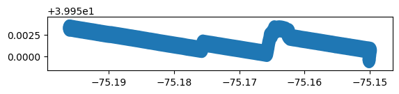
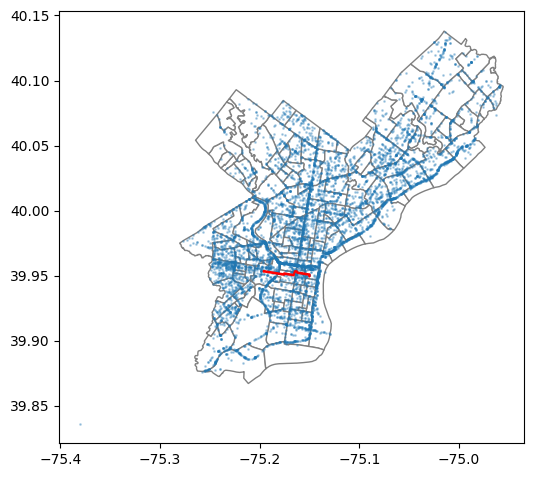
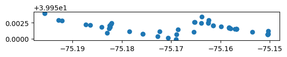
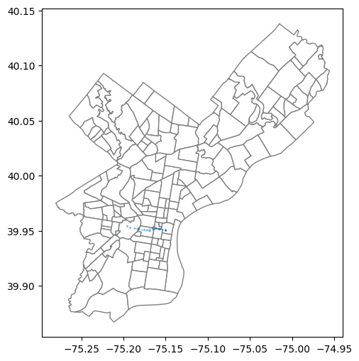

import pandas as pd
import geopandas as gpd
import matplotlib.pyplot as pltPath intersection
directions = gpd.read_file('liberty_bell_to_ASC.kml', driver='KML').to_crs('EPSG:4326')directions| id | Name | description | timestamp | begin | end | altitudeMode | tessellate | extrude | visibility | drawOrder | icon | geometry | |
|---|---|---|---|---|---|---|---|---|---|---|---|---|---|
| 0 | None | Directions from Liberty Bell, Market Street, P... | None | NaT | NaT | NaT | None | 1 | 0 | -1 | NaN | None | LINESTRING Z (-75.15013 39.9496 0, -75.15012 3... |
| 1 | None | Liberty Bell, Market Street, Philadelphia, PA | None | NaT | NaT | NaT | None | -1 | 0 | -1 | NaN | None | POINT Z (-75.15013 39.9496 0) |
| 2 | None | 3620 Walnut Street, Philadelphia, PA | None | NaT | NaT | NaT | None | -1 | 0 | -1 | NaN | None | POINT Z (-75.196 39.9533 0) |
directions.buffer(0.001).plot()/tmp/ipykernel_3202782/2049657242.py:1: UserWarning: Geometry is in a geographic CRS. Results from 'buffer' are likely incorrect. Use 'GeoSeries.to_crs()' to re-project geometries to a projected CRS before this operation.
directions.buffer(0.001).plot()
crash_df = pd.read_csv('data/PDOT_crash_data_2005_2024.csv', low_memory=False)crash_2024 = crash_df.query('CRASH_YEAR==2024 and COUNTY==67')
crash_2024.shape(7425, 99)geom=gpd.points_from_xy(crash_2024['DEC_LONGITUDE'],
crash_2024['DEC_LATITUDE']
)
crash_2024_gdf = gpd.GeoDataFrame(crash_2024,
geometry=geom, crs='EPSG:4326')philly_gdf = gpd.read_file('data/philadelphia_zip_boundaries.geojson')
base=philly_gdf.plot(color='white',
edgecolor='gray', figsize=(6,6))
crash_2024_gdf.plot(ax=base, markersize=1, alpha=0.3)
directions.buffer(0.001).plot(ax=base, color='red')
plt.show()/tmp/ipykernel_3202782/3819416956.py:7: UserWarning: Geometry is in a geographic CRS. Results from 'buffer' are likely incorrect. Use 'GeoSeries.to_crs()' to re-project geometries to a projected CRS before this operation.
directions.buffer(0.001).plot(ax=base, color='red')
#tolerance = 1
#points_on_line = crash_2024_gdf.intersects(directions.buffer(0.001), align=False)
buf_gdf = gpd.GeoDataFrame(geometry=directions.buffer(0.001), crs='EPSG:4326')
on_line = gpd.sjoin(crash_2024_gdf, buf_gdf, predicate='intersects', how='inner')/tmp/ipykernel_3202782/831988691.py:5: UserWarning: Geometry is in a geographic CRS. Results from 'buffer' are likely incorrect. Use 'GeoSeries.to_crs()' to re-project geometries to a projected CRS before this operation.
buf_gdf = gpd.GeoDataFrame(geometry=directions.buffer(0.001), crs='EPSG:4326')on_line.plot()
philly_gdf = gpd.read_file('data/philadelphia_zip_boundaries.geojson')
base=philly_gdf.plot(color='white',
edgecolor='gray', figsize=(6,6))
on_line.plot(ax=base, markersize=1, alpha=0.3)
#directions.buffer(0.001).plot(ax=base, color='red')
plt.show()
cnt_cols = [c for c in on_line.columns if c.count('_COUNT') and c.count('_')==1]on_line[cnt_cols].sum()AUTOMOBILE_COUNT 2
BICYCLE_COUNT 0
BUS_COUNT 1
FATAL_COUNT 0
INJURY_COUNT 53
MOTORCYCLE_COUNT 0
NONMOTR_COUNT 0
PED_COUNT 0
PERSON_COUNT 132
SUV_COUNT 0
VAN_COUNT 0
VEHICLE_COUNT 4
dtype: int64on_line.query('PERSON_COUNT>2')| CRN | ARRIVAL_TM | AUTOMOBILE_COUNT | BELTED_DEATH_COUNT | BELTED_SUSP_SERIOUS_INJ_COUNT | BICYCLE_COUNT | BICYCLE_DEATH_COUNT | BICYCLE_SUSP_SERIOUS_INJ_COUNT | BUS_COUNT | CHLDPAS_DEATH_COUNT | ... | WZ_CLOSE_DETOUR | WZ_FLAGGER | WZ_LAW_OFFCR_IND | WZ_LN_CLOSURE | WZ_MOVING | WZ_OTHER | WZ_SHLDER_MDN | WZ_WORKERS_INJ_KILLED | geometry | index_right | |
|---|---|---|---|---|---|---|---|---|---|---|---|---|---|---|---|---|---|---|---|---|---|
| 663980 | 2024014176 | 1042.0 | 0 | 0 | 0 | 0 | 0 | 0 | 1 | 0 | ... | NaN | NaN | NaN | NaN | NaN | NaN | NaN | NaN | POINT (-75.19282 39.9529) | 0 |
| 665001 | 2024018660 | 257.0 | 0 | 0 | 0 | 0 | 0 | 0 | 0 | 0 | ... | NaN | NaN | NaN | NaN | NaN | NaN | NaN | NaN | POINT (-75.16905 39.94994) | 0 |
| 668245 | 2024031581 | 1600.0 | 0 | 0 | 0 | 0 | 0 | 0 | 0 | 0 | ... | NaN | NaN | NaN | NaN | NaN | NaN | NaN | NaN | POINT (-75.15801 39.95163) | 0 |
| 669745 | 2024035825 | 711.0 | 0 | 0 | 0 | 0 | 0 | 0 | 0 | 0 | ... | NaN | NaN | NaN | NaN | NaN | NaN | NaN | NaN | POINT (-75.18294 39.95089) | 0 |
| 674879 | 2024055621 | 408.0 | 0 | 0 | 0 | 0 | 0 | 0 | 0 | 0 | ... | NaN | NaN | NaN | NaN | NaN | NaN | NaN | NaN | POINT (-75.18207 39.95242) | 0 |
| 676230 | 2024060956 | NaN | 0 | 0 | 0 | 0 | 0 | 0 | 0 | 0 | ... | NaN | NaN | NaN | NaN | NaN | NaN | NaN | NaN | POINT (-75.18242 39.95183) | 0 |
| 676269 | 2024061160 | NaN | 0 | 0 | 0 | 0 | 0 | 0 | 0 | 0 | ... | NaN | NaN | NaN | NaN | NaN | NaN | NaN | NaN | POINT (-75.15671 39.95155) | 0 |
| 677048 | 2024064436 | 2353.0 | 0 | 0 | 0 | 0 | 0 | 0 | 0 | 0 | ... | NaN | NaN | NaN | NaN | NaN | NaN | NaN | NaN | POINT (-75.15037 39.95071) | 0 |
| 677332 | 2024065530 | 2224.0 | 0 | 0 | 0 | 0 | 0 | 0 | 0 | 0 | ... | NaN | NaN | NaN | NaN | NaN | NaN | NaN | NaN | POINT (-75.15704 39.95151) | 0 |
| 680270 | 2024077589 | NaN | 0 | 0 | 0 | 0 | 0 | 0 | 0 | 0 | ... | NaN | NaN | NaN | NaN | NaN | NaN | NaN | NaN | POINT (-75.18244 39.95204) | 0 |
| 682295 | 2024086923 | 407.0 | 0 | 0 | 0 | 0 | 0 | 0 | 0 | 0 | ... | NaN | NaN | NaN | NaN | NaN | NaN | NaN | NaN | POINT (-75.15825 39.95165) | 0 |
| 686646 | 2024105413 | NaN | 0 | 0 | 0 | 0 | 0 | 0 | 0 | 0 | ... | NaN | NaN | NaN | NaN | NaN | NaN | NaN | NaN | POINT (-75.18406 39.95181) | 0 |
| 686773 | 2024105894 | NaN | 0 | 0 | 0 | 0 | 0 | 0 | 0 | 0 | ... | NaN | NaN | NaN | NaN | NaN | NaN | NaN | NaN | POINT (-75.16253 39.95249) | 0 |
| 689262 | 2024116018 | NaN | 0 | 0 | 0 | 0 | 0 | 0 | 0 | 0 | ... | NaN | NaN | NaN | NaN | NaN | NaN | NaN | NaN | POINT (-75.16383 39.95343) | 0 |
| 689310 | 2024116213 | NaN | 0 | 0 | 0 | 0 | 0 | 0 | 0 | 0 | ... | NaN | NaN | NaN | NaN | NaN | NaN | NaN | NaN | POINT (-75.15671 39.95155) | 0 |
| 690947 | 2025020676 | 2228.0 | 0 | 0 | 0 | 0 | 0 | 0 | 0 | 0 | ... | NaN | NaN | NaN | NaN | NaN | NaN | NaN | NaN | POINT (-75.18232 39.95226) | 0 |
16 rows × 101 columns
on_line.value_counts('COLLISION_TYPE')COLLISION_TYPE
8 24
4 11
1 9
5 7
7 1
Name: count, dtype: int64ctype = '''
0 – Non-collision
1 – Rear-end
2 – Head-on
3 – Backing
4 – Angle
5 – Sideswipe (same dir.)
6 – Sideswipe (Opposite dir.)
7 – Hit Fixed Object
8 – Hit Non-Motorist
9 – Other/Unknown (Expired)
98 – Other
99 - Unknown
'''
ctype.splitlines()['',
'0 – Non-collision',
'1 – Rear-end',
'2 – Head-on',
'3 – Backing',
'4 – Angle',
'5 – Sideswipe (same dir.)',
'6 – Sideswipe (Opposite dir.)',
'7 – Hit Fixed Object',
'8 – Hit Non-Motorist',
'9 – Other/Unknown (Expired)',
'98 – Other',
'99 - Unknown']